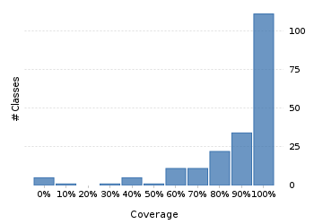
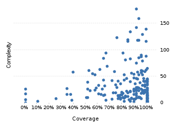

Project overview
Code coverage 228 classes, 18,513 / 21,538 elements
0.8595505486%
Test results 1,771 / 1,771 tests 14.83 secs
1.0100%
Code metrics
4,882
12,842
3,814
228
157
7
68,718
27,801
6,977
0.54
3.37
16.73
32.57
1.83
Class Coverage Distribution

Class Complexity

Coverage tree map
Generating Coverage Tree Map. Please wait...

Top 20 project risks
DateTimeFormatterBuilder.MatchingParser
DateTimeFieldType.StandardDateTimeFieldType
StringConverter
ConverterSet
DateTimeFormatterBuilder.NumberFormatter
PeriodType
BaseSingleFieldPeriod
DurationFieldType.StandardDurationFieldType
Partial
CachedDateTimeZone.Info
ISODateTimeFormat
PeriodFormatterBuilder.Separator
GJLocaleSymbols
BasePeriod
PeriodFormatterBuilder.FieldFormatter
DateTimeZone
CopticChronology
ConverterManager
DateTimeComparator
PeriodFormatterBuilder.Composite
Most complex packages
| 1. | 0.9485730594.9% |
org.joda.time 2458 |
| 2. | 0.803462180.3% |
org.joda.time.format 1496 |
| 3. | 0.7802955578% |
org.joda.time.chrono 1239 |
| 4. | 0.748040374.8% |
org.joda.time.field 667 |
| 5. | 0.833929583.4% |
org.joda.time.tz 535 |
Most complex classes
| 1. | 0.919385891.9% |
LocalDateTime 179 |
| 2. | 0.930184893% |
LocalDate 161 |
| 3. | 0.9179389591.8% |
DateTimeZone 144 |
| 4. | 0.99470999.5% |
DateTime 141 |
| 5. | 0.866359586.6% |
PeriodFormatterBuilder.FieldFormatter 136 |